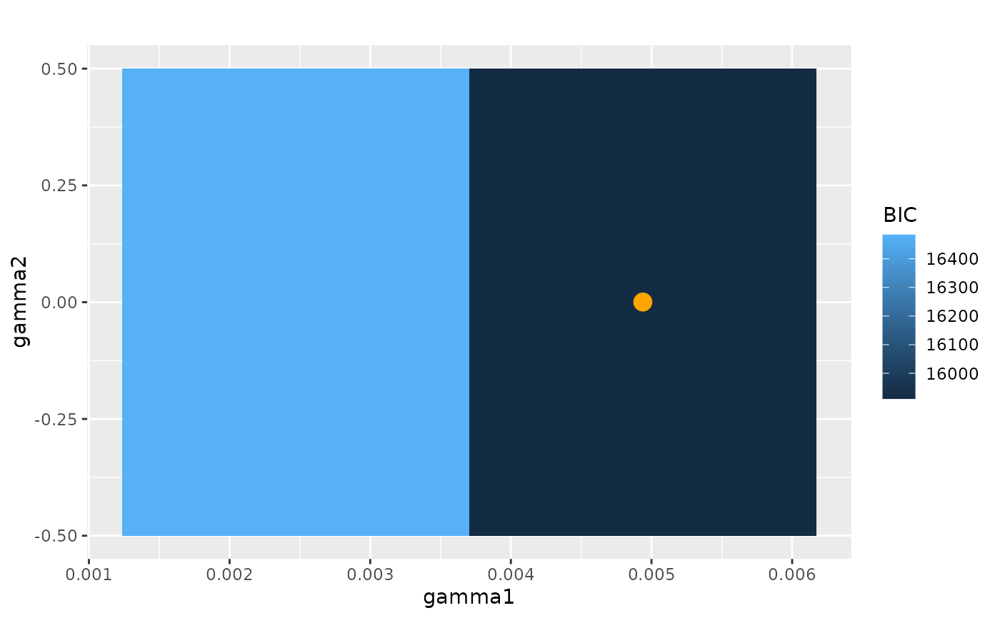
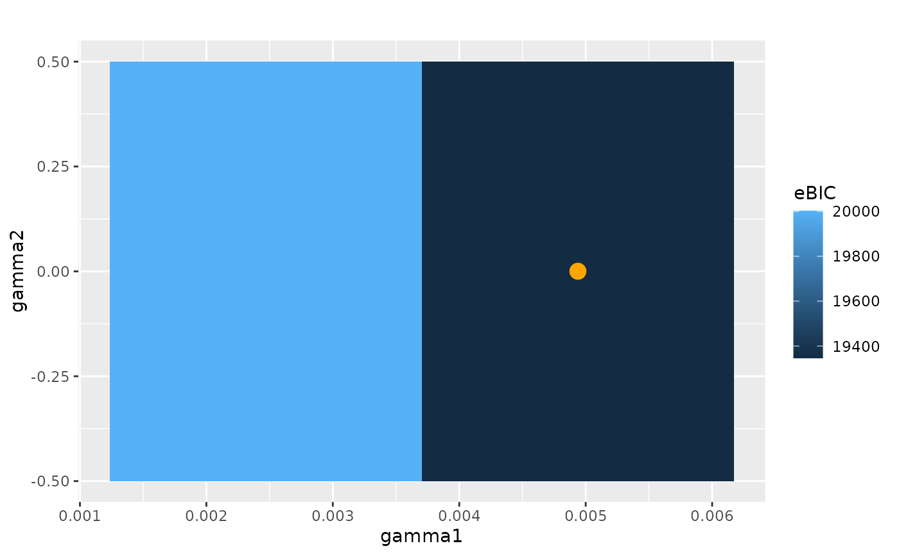

Heat Map of an Information Criterion (AIC or BIC)
Source:R/plot-information-criterion.R
plot_information_criterion.RdReturns a heat map of the AIC or BIC for a fitted CVN
Arguments
- cvn
Fitted CVN, see
CVN- criterion
The information criterion, must be either
'aic'or'bic'. Default:'bic'- use_gammas
If
TRUE, plots the \(\gamma\)-values. Otherwise, the \(\lambda\)-values are used- show_minimum
If
TRUE, an orange dot is put on the point with the minimum value of the information criterion is. IfFALSE, no dot is added. Default:TRUE.- title
Title plot (Default is none)
- xlabel
Label for the \(x\)-axis. Default depends on
use_gammas. Ifuse_gammas = TRUE, then the label is 'gamma1'. Otherwise, 'lambda1'- ylabel
Label for the \(x\)-axis. Default depends on
use_gammas. Ifuse_gammas = TRUE, then the label is 'gamma1'. Otherwise, 'lambda1'- legend_label
Title for the legend. Default depends on
criterion. If'aic', then the label is 'AIC'. Otherwise, 'BIC'.- limits
The limits for the values of the Hamming distance
Examples
data(grid)
m <- 9
W <- create_weight_matrix(type="grid", 3, 3)
cvn <- CVN(grid, W,
lambda1 = 1:2, lambda2 = .5, n_cores = 1)
#> Estimating a CVN with 9 graphs...
#>
#> Number of cores: 1
#> Uses a warmstart...
#>
#> -------------------------
#> iteration 1 | 2.180956
#> iteration 2 | 0.115992
#> iteration 3 | 0.085701
#> iteration 4 | 0.032432
#> iteration 5 | 0.027966
#> iteration 6 | 0.014144
#> iteration 7 | 0.011243
#> iteration 8 | 0.008368
#> iteration 9 | 0.006504
#> iteration 10 | 0.005949
#> -------------------------
#> iteration 11 | 0.004572
#> iteration 12 | 0.003524
#> iteration 13 | 0.003235
#> iteration 14 | 0.002473
#> iteration 15 | 0.002350
#> iteration 16 | 0.002180
#> iteration 17 | 0.001924
#> iteration 18 | 0.001890
#> iteration 19 | 0.001638
#> iteration 20 | 0.001591
#> -------------------------
#> iteration 21 | 0.001375
#> iteration 22 | 0.001291
#> iteration 23 | 0.000999
#> iteration 24 | 0.000962
#> iteration 25 | 0.000888
#> iteration 26 | 0.000848
#> iteration 27 | 0.000777
#> iteration 28 | 0.000637
#> iteration 29 | 0.000600
#> iteration 30 | 0.000599
#> -------------------------
#> iteration 31 | 0.000542
#> iteration 32 | 0.000550
#> iteration 33 | 0.000513
#> iteration 34 | 0.000451
#> iteration 35 | 0.000430
#> iteration 36 | 0.000411
#> iteration 37 | 0.000398
#> iteration 38 | 0.000387
#> iteration 39 | 0.000367
#> iteration 40 | 0.000386
#> -------------------------
#> iteration 41 | 0.000354
#> iteration 42 | 0.000351
#> iteration 43 | 0.000360
#> iteration 44 | 0.000361
#> iteration 45 | 0.000329
#> iteration 46 | 0.000318
#> iteration 47 | 0.000308
#> iteration 48 | 0.000294
#> iteration 49 | 0.000306
#> iteration 50 | 0.000275
#> -------------------------
#> iteration 51 | 0.000265
#> iteration 52 | 0.000241
#> iteration 53 | 0.000233
#> iteration 54 | 0.000230
#> iteration 55 | 0.000216
#> iteration 56 | 0.000234
#> iteration 57 | 0.000191
#> iteration 58 | 0.000187
#> iteration 59 | 0.000171
#> iteration 60 | 0.000165
#> -------------------------
#> iteration 61 | 0.000168
#> iteration 62 | 0.000186
#> iteration 63 | 0.000168
#> iteration 64 | 0.000157
#> iteration 65 | 0.000152
#> iteration 66 | 0.000147
#> iteration 67 | 0.000146
#> iteration 68 | 0.000153
#> iteration 69 | 0.000139
#> iteration 70 | 0.000135
#> -------------------------
#> iteration 71 | 0.000131
#> iteration 72 | 0.000127
#> iteration 73 | 0.000124
#> iteration 74 | 0.000120
#> iteration 75 | 0.000117
#> iteration 76 | 0.000114
#> iteration 77 | 0.000121
#> iteration 78 | 0.000124
#> iteration 79 | 0.000113
#> iteration 80 | 0.000106
#> -------------------------
#> iteration 81 | 0.000120
#> iteration 82 | 0.000114
#> iteration 83 | 0.000103
#> iteration 84 | 0.000105
#> iteration 85 | 0.000102
#> iteration 86 | 0.000097
#> -------------------------
#> iteration 1 | 1.771692
#> iteration 2 | 0.153946
#> iteration 3 | 0.092411
#> iteration 4 | 0.072031
#> iteration 5 | 0.054334
#> iteration 6 | 0.026809
#> iteration 7 | 0.020415
#> iteration 8 | 0.016228
#> iteration 9 | 0.012340
#> iteration 10 | 0.009765
#> -------------------------
#> iteration 11 | 0.008402
#> iteration 12 | 0.006927
#> iteration 13 | 0.006604
#> iteration 14 | 0.005755
#> iteration 15 | 0.004868
#> iteration 16 | 0.004128
#> iteration 17 | 0.003626
#> iteration 18 | 0.003184
#> iteration 19 | 0.002952
#> iteration 20 | 0.002483
#> -------------------------
#> iteration 21 | 0.002288
#> iteration 22 | 0.002080
#> iteration 23 | 0.001743
#> iteration 24 | 0.001602
#> iteration 25 | 0.001633
#> iteration 26 | 0.001355
#> iteration 27 | 0.001302
#> iteration 28 | 0.001151
#> iteration 29 | 0.001054
#> iteration 30 | 0.001003
#> -------------------------
#> iteration 31 | 0.000923
#> iteration 32 | 0.000909
#> iteration 33 | 0.000864
#> iteration 34 | 0.000876
#> iteration 35 | 0.000768
#> iteration 36 | 0.000779
#> iteration 37 | 0.000663
#> iteration 38 | 0.000621
#> iteration 39 | 0.000607
#> iteration 40 | 0.000589
#> -------------------------
#> iteration 41 | 0.000553
#> iteration 42 | 0.000547
#> iteration 43 | 0.000486
#> iteration 44 | 0.000442
#> iteration 45 | 0.000406
#> iteration 46 | 0.000362
#> iteration 47 | 0.000356
#> iteration 48 | 0.000340
#> iteration 49 | 0.000332
#> iteration 50 | 0.000369
#> -------------------------
#> iteration 51 | 0.000321
#> iteration 52 | 0.000314
#> iteration 53 | 0.000301
#> iteration 54 | 0.000290
#> iteration 55 | 0.000282
#> iteration 56 | 0.000274
#> iteration 57 | 0.000255
#> iteration 58 | 0.000257
#> iteration 59 | 0.000240
#> iteration 60 | 0.000228
#> -------------------------
#> iteration 61 | 0.000224
#> iteration 62 | 0.000220
#> iteration 63 | 0.000214
#> iteration 64 | 0.000206
#> iteration 65 | 0.000189
#> iteration 66 | 0.000191
#> iteration 67 | 0.000201
#> iteration 68 | 0.000180
#> iteration 69 | 0.000175
#> iteration 70 | 0.000175
#> -------------------------
#> iteration 71 | 0.000168
#> iteration 72 | 0.000175
#> iteration 73 | 0.000149
#> iteration 74 | 0.000143
#> iteration 75 | 0.000139
#> iteration 76 | 0.000136
#> iteration 77 | 0.000135
#> iteration 78 | 0.000128
#> iteration 79 | 0.000125
#> iteration 80 | 0.000122
#> -------------------------
#> iteration 81 | 0.000119
#> iteration 82 | 0.000116
#> iteration 83 | 0.000113
#> iteration 84 | 0.000111
#> iteration 85 | 0.000113
#> iteration 86 | 0.000104
#> iteration 87 | 0.000110
#> iteration 88 | 0.000096
cvn$results
#> id lambda1 lambda2 gamma1 gamma2 converged value
#> 1 1 1 0.5 0.002469136 0.000308642 TRUE 9.684448e-05
#> 2 2 2 0.5 0.004938272 0.000308642 TRUE 9.643472e-05
#> n_iterations aic bic ebic edges_median edges_iqr
#> 1 87 14493.34 16483.69 20002.04 42 1
#> 2 89 13967.70 15911.15 19346.61 42 2
# The smaller the IC value, the better the fit.
plot_information_criterion(cvn, criterion = "aic")
plot_information_criterion(cvn, criterion = "bic")

plot_information_criterion(cvn, criterion = "ebic")
